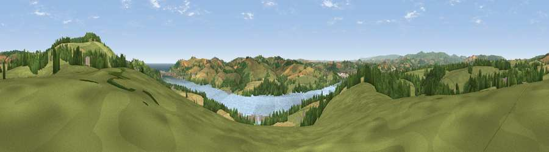

Viewpoint near Bishopsteignton
#5678 in England · top 11% of its area beats it · near Bishopsteignton · access?Where it is
The exact computed spot (SX 89388 73775). Click the marker for map links.
Public access: no public right of way or access land is recorded at this exact spot — it may be on private land. Computed from Natural England's CRoW access layer and OpenStreetMap rights of way — not the legal definitive map. Always verify locally.
The view, rendered

A 360° render of this exact spot computed from the terrain model, tree cover and land cover — summer colours, afternoon light, calibrated against photographs of famous viewpoints. Real trees, hedges and buildings will differ in detail.
The panorama
Grey silhouette: terrain skyline in each direction (720 bearings, Earth curvature and refraction included). Dashed green: skyline with trees (+15 m) and buildings (+8 m) as obstacles. Blue strip: how far the ground is visible on each bearing.
Where the view opens
Wedge length = distance to the farthest visible ground on that bearing (vegetation-aware). Rings at 10, 25 and 50 km.
What fills the view
59% grassland · 19% woodland · 12% water · 8% cropland · 2% built-up
Angular shares of the visible panorama (visual magnitude), not map area. Landscape diversity 0.51 (0–1 Shannon).
Key numbers
More beautiful places nearby
The staircase of upgrades: each row has a higher view potential than everything closer. Driving times are estimates from straight-line distance, calibrated against real road routing — check an actual route before setting out.
| Place | Direction | Drive | Score |
|---|---|---|---|
| Viewpoint near Bishopsteignton | ENE · 2 km | ~4 min | 79.9 |
| Viewpoint near Holcombe | ENE · 4 km | ~10 min | 83.3 |
| Viewpoint near Shaldon | SE · 5 km | ~10 min | 83.8 |
| Viewpoint near Stokeinteignhead | SE · 5 km | ~11 min | 84.1 |
| High Peak | ENE · 24 km | ~39 min | 85.3 |
| Golden Cap | ENE · 54 km | ~76 min | 88.7 |
| The Knoll | ENE · 65 km | ~88 min | 91.0 |
50.55324, -3.56276 · source: screening · position refined by local search. Computed location — check access rights before visiting.